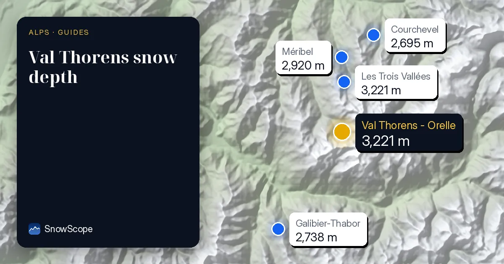
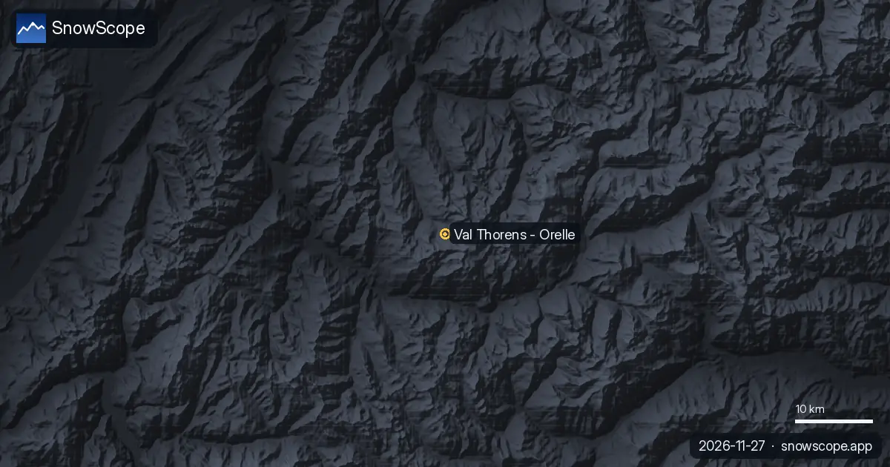

Val Thorens snow depth: 146 cm up top in late November, more than twice a normal year at mid-mountain
Val Thorens has 146 cm of snow on its upper slopes on 27 November 2026 and 115 cm at 2,474 m, the height of the resort centre, where 49 cm is normal for the date. That is a start most winters only reach in the second week of December.
See the live snow forecast for Val Thorens - Orelle in the SnowScope appSnow depth, powder alerts and the 3D map, free.

How rare is this?
In a usual winter the snowpack at 2,474 m passes 115 cm only around mid-December: the normal depth is 72 cm on 8 December and 88 cm on 15 December. Even the richest winters in our 46-year record (one in ten) have about 104 cm on 27 November, so this season sits right at the deep end of the range.
The snow came in three big storms in the second half of November; over the last seven days alone the upper slopes gained 121 cm.
Does a deep November mean a big winter?
Not necessarily. Our record shows that November snow says little about February or March. What it does is remove the risk of a thin December: even if December brought only half its usual snow, Val Thorens would still have more than a normal Christmas, which is 109 cm at 2,474 m.
The best winter on record peaked at 315 cm (1994-95), the leanest at 163 cm (2004-05). The usual peak arrives in March, near 201 cm.
Where the best snow is now
The whole resort sits high, from about 1,726 m to 3,221 m, and early-season snow here is usually good from top to bottom. After a storm, the north-facing slopes under Cime Caron and the Péclet glacier keep cold snow longest; the sunny south-facing pistes towards Orelle soften first on clear afternoons.
The next days are dry and cold. Expect firm, grippy pistes in the morning and some wind-packed snow on the ridges; off-piste, the deep, fresh snowpack needs time to settle, so check the avalanche bulletin every day.
December and Christmas
For an early-December trip this is the best start Val Thorens can offer: the snow is already deeper than a usual 15 December. For Christmas, a usual 25 December has 109 cm; a 50 cm base by New Year was reached in 98% of winters, and by 15 December in 80%.
The Val Thorens snow page shows the depth at the base, mid-mountain and top every day, with the forecast for the next days.
Quick answers
Is the whole resort open in early December? The resort's own opening plan decides that, but the snow is there: the depth at 2,474 m is above a normal mid-December.
Is the snow good or icy after a dry week? At this height it stays wintry. Cold, clear days firm the groomers up in the morning and soften the sunny pistes in the afternoon, without the crust that lower resorts get after a thaw.
Should I wait for more snow? Not this year. The base is already deep, and the next storms will only add to it.
Booking now
Early December weeks are the cheapest of the winter in the Three Valleys, and in a season that starts this well they are the best value of the year. Christmas and New Year are a different market: beds sell out months ahead, and a deep start brings late bookers.
The resort is car-free in the centre; if you drive, the road from Moûtiers climbs the Belleville valley, and chains or winter tyres are compulsory in the mountain zone in winter.
Tips for skiers
- Go early: the first two weeks of December give deep snow at off-peak prices this year.
- Start on the north-facing pistes in the morning and finish on the south-facing ones when the sun softens them.
- Treat the off-piste with care: a deep, fresh early-season snowpack is often unstable.
- Compare with other resorts on the Alps snow hub and read the Alps three-week outlook.
About these numbers
Snow numbers: SnowScope's snow map and forecast for today, and our record of 46 past winters at each resort (an estimate for the area, not the resort's own report).
Official avalanche bulletins: Météo-France – Bulletin d'estimation du risque d'avalanche
Cite this report
For research, teaching or the press: the numbers and charts are free to reuse under CC BY 4.0 with this citation.
SnowScope (2026), Val Thorens snow depth: 146 cm up top in late November, more than twice a normal year at mid-mountain, https://snowscope.app/blog/en/2026/11/val-thorens-snow-depth-late-november-2026-more-than-twice-normal.html, accessed 2026-11-27
SnowScope (Atlas Labs). (2026, November 27). Val Thorens snow depth: 146 cm up top in late November, more than twice a normal year at mid-mountain. SnowScope snow reports. https://snowscope.app/blog/en/2026/11/val-thorens-snow-depth-late-november-2026-more-than-twice-normal.html
BibTeX
@misc{snowscope2026valthorenssnowdepthlaten,
author = {{SnowScope (Atlas Labs)}},
title = {Val Thorens snow depth: 146 cm up top in late November, more than twice a normal year at mid-mountain},
year = {2026},
month = nov,
howpublished = {\url{https://snowscope.app/blog/en/2026/11/val-thorens-snow-depth-late-november-2026-more-than-twice-normal.html}},
note = {Published 2026-11-27 19:22 UTC; accessed 2026-11-27}
}· CC BY 4.0 · Methods, data and tools →
Val Thorens - Orelle: snow and temperature by height, this winter vs last (tools) →
Follow Val Thorens - Orelle
Free: a message when fresh snow is coming, and the forecast every morning.